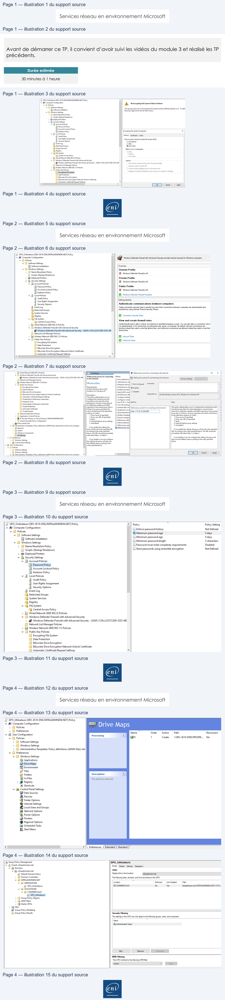
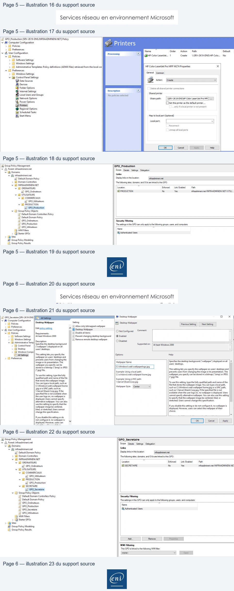

Transcription du document du Drive TSSR. La mise en forme est adaptée au Web ; les compléments IA du portail sont présentés séparément.
Services réseau en environnement Microsoft
TP du Module 03 – Active Directory
Avant de démarrer ce TP, il convient d’avoir suivi les vidéos du module 3 et réalisé les TP
précédents.
Durée estimée
30 minutes à 1 heure
Prérequis :
•
Avoir réalisé le TP précédent du Module 02.
Mise en œuvre des GPO
•
Trouvez et validez le paramètre adapté (utilisateur ou ordinateur).
•
Définissez les stratégies de groupe nécessaires et le point de liaison (UO) pour leur
application.
•
Regroupez les paramètres du même type dans une seule GPO.
•
Testez-en le bon fonctionnement avec les comptes utilisateurs adéquats.
Pour l’ensemble des utilisateurs du domaine
•
La fonctionnalité de chiffrement EFS doit être désactivée.
Page 1/6
© ENI – Tous droits réservés
GPO. Ociateurs SRV-2KTE-DISINFRAADMINENLNET] Policy
a
YW Computer Configuration
No Encrypting
Fie System Policies Defined
een
À
rs
¥ Software Stings
‘This group poly has no Encrypting File System plis defined dec ont. To defi
“Ej Softareinstalition
Recovery agent fom the ose sen
2 Windows Settings
> EE] Name Rerolution Policy
22 Seite Statup/ Shutdown)
1 Deployed Printers
VB
Security Settings
Gi Account Potces
3 Password Policy
À Account Lockout Pocy
À Ketewsbeicy
Encrypting File System Properties
x
+ à Loca Policies
i Audit Policy
Comal Ceres)
(A User Rights Assignment
Fle encryption using Encrypting Fle System (EFS):
__ Security Options
Ont des
Event Log
Onion
a Resticted Groups
Wortaon
Wa Sytem Services
pte Cavepipe
1 Registry
Aon
Gi Fie sytem
rer
i Central Acces Ptcy
Data
By Wired Network (EEE 823) Policies
IE Window Defender Firewall wth Advanced Security
opte
> @ Windows Defender Firewall with Advanced Security - LDAP://CN=(2257C2D8-3335-491.
|Encrypt the contents of the user's Documents folder
1 Network
List Manage Pokies
Request cardfrOS
>
Ef Wire Nero REZ) Poe
create cachingcapable er ky fr anartcard
EE Pubtc Key Poñcies
:
:
C3 Encrypting FileSystem
3 Data Protection
2 BtLocker Drive Encryption
21 BitLocker rive Encryption Network Unlock Certificate
LE Automatic Cerificate Request Sting
.
=
>
(lo)
[cores
sty
Services réseau en environnement Microsoft
•
Le pare-feu système doit être désactivé.
•
Internet Explorer sera client proxy du serveur 172.28.10.248 en écoutant sur le port
8080.
Page 2/6
© ENI – Tous droits réservés
5j GPOL Ordinateurs [SRV-2K19-DNS.INFRAADMINENI.NET] Policy
a
A Computer Configuration
Windows Defender Frewal wth Advanced Securtyprovides network secuty for Windows computers.
a
VO
Policies
VD Software Settings
i Software installation
Overview
¥ [El Windows Settings
Domain Profile
> IE] Name Resolution Policy
e
Da
‘sot
(2) Scripts (Startup/Shutdown)
dons
Den Front
> mn Deployed Printers
Private Profile
YB Security Settings
{Windows Defender Frewallisof.
+ [i Account Policies
(Gi Password Policy
Public Profile
Bi Account Lockout Policy
1 Windows Defender Frewallis
off
i Kerberos Policy
Vi Local Poicies
Windows Defender Frewall Propeties
Adj Audit Policy
Getting
Started
A User Rights Assignment
=a
ii Security Options
Authenticate communications between computers
uj Event Log
Create connection secunty rules to specify how and when connections between computers are authenticated and
(i Restricted Groups
protected
by using Intemet Protocol securty (IPsec).
à System Services
à Registry
BB Connection Securty Rules
[1G
File System
Mi
fes
View and create firewall rules
1G Central Access Policy
iy
Wi
ici
Create frewalnes to allow or block connections to spectied programs or pots. You can also allow a connection onlyi
> El Wired Network (IEEE 802.3) Policies
{tisauthenticated,
or f & comes from an authorized user, group. orcomputer. By default, inbound connections are
+. HI Windows Defender Firewall with Advanced Security
blocked unless they match a ne that alows them, and obound connections are alowed uiess they match are that
> @ Windows Defender Firewall with Advanced Security-LDAP://CN=(2257C2D8-3335-49¢
blocks them.
5 Network List Manager Policies
> if Wireless Network (IEEE 802.11) Policies
© bound Rues
VD] Public Key Policies
BD Cuba Rues
i Encrypting File System
fi Data Protection
I BitLocker Drive Encryption
[Gy BitLocker Drive Encryption Network Unlock Certificate
D Automatic Certificate Request Settings
v
<>
>
i] Wired Network (EE 8023) Policies
zs
{Define pron serverfor connecting tothe network
o
x
1 Windows Defender Firewall with Advanced Security
2
lo:een Frot
nee
LANG TON
|
Fitton Dee oe svererconecingte
enor
Fes) Re
> Ed Wireless Network (EEE 82.11 Pokies
Feit
psy set
2 Inte pro 0
emer
à D publie
KeyPolices
freres
I Emterprise resour| © NotConfigured
Comment
2 Encrypting File System
Baquirements
EE intane pros se) © Ena
{Gi Data Protection
At least Windows Server 2012,
E Disable revocatic SES
1 BitLocker Drive Encryption
Windows
8 or Windows RT
{Specify KDC pro
© Dsabled
[Bl BitLocker Drive Encryption Network Unlock Certificate
Description
(E) SetMinimumal
Supported on: | t jeast Windows Server 2012,Windows
8 or Windows RT
A
Automatic Cerificate Request Stings
This policy sting allowsyouto
| Confgure Authe
A Trusted Root Certification Authorities
configure the named preny that
1) Configure Conne
Enterprise Ts
Should be usedwhen the cent
sone
mat CetetonAtos
Der mets thence
UT
a
“se
=
{or dsfntion updatesand MAPS
Tr off sending
sted Publishers
Teporting. th amedprny fal oF [rae Sex In| pn pron sever fox connectingoenano ||TH BaRe sting allows you tocongue the nared pony at
3 Untusted Crtiates
Here
no prony specie the
sate the Cone
shouldbe used when te cent attempsfo connect the
5] Twsted People
lent wilfalbackto the state
©
CEE]
essor defintion updates and MAPS reporting. the named
> 13 Softnare Restriction Polices
pins (order:
LB Send iteration
pros fails ori theresn pony specie, the cent wil all back
> D Atom Copa Pons
Te Pros sever specified)
Diable changin
tothe atemativ option im ode
8
one
FTP rss
res pec URL Gt spect
> [3 Advanced Audit Policy Configuration
4 Internet Explorer proxy settings
=) Make
pro
3. None
> lu Policy-based Qos
5. Autodetect
Define addresses
À Internet Explorer prony settings
'v [ij Administrative Templates: Policy definitions (ADMX files) retrieved from the local computer.
bile
thie
setting
the
[E| Define proxy aut
5. Autodetect
> 8 Neseore
pron/nil besetothespecieg un. ADenepro
you enablethie setting the proxywillbesett the specified
> 5 System
‘cording to the order specified
URLaccording
to the order specified above. The URL should be
>
Windows Components
Shove. The URL shouldbe proceeded
proceeded with ether pu or aps.
= settings
Aethertprtp.
+
1
Preferences
A you disable or do not configure
his sting, the proxy wll
ano
Hyou diable ord not configure
sip over th fallback step according to the order specified
>a
1
thissetting,
the proxy will skip over
above.
>
Control Panel Stinge
‘this fallback step according tothe
¥ iB UserConfiguration
order specified above
% 0 Policies
> [Software Settings
>
Windows Setings
:
=]
[aw
VD
Administrative Templates: Policy definitions (ADM le) retieved fromthe local computer
¥ |
>ent
Services réseau en environnement Microsoft
•
Le mot de passe devra compter au moins 5 caractères et il sera à changer tous les
5 jours.
•
Aucune exigence de complexité de mot de passe n’est envisagée.
Page 3/6
© ENI – Tous droits réservés
|=} GPO_Ordinateurs [SRV-2K19-DNS.INFRAADMINENI.NET] Policy
A | policy
a
Policy Setting
© EB Computer Configuration
GEnforce password history
Not Defined
va eee set
(@ Maximum password age
5 days
Y
a suture ro letion
(Minimum password age
4 days
© [Gl Windows Settings
E Minimum password length
5 characters
> [El Name Resolution Policy
(Gj Password must meet complexity requirements
Disabled
Scripts (Startup/Shutdown)
(Gj Store passwords using reversible encryption
Not Defined
> tp Deployed Printers
VE Security Settings
v 5B Account Policies
25 Password Policy
I Account Lockout Policy
25 Kerberos Policy
v Gj Local Policies
Gj Audit Policy
qj User Rights Assignment
& Security Options
ij Event Log
1G Restricted Groups
D System Services
G Registry
v [Gj File System
(1G Central Access Policy
> Ea Wired Network (IEEE 802.3) Policies
¥ [El Windows Defender Firewall with Advanced Security
> @ Windows Defender Firewall with Advanced Security - LDAP://CN={2257C2D8-3335-49E
(5 Network List Manager Policies
> Eat Wireless Network (IEEE 802.11) Policies
v 5 Public Key Policies
Ii Encrypting File System
IN Data Protection
(5 BitLocker Drive Encryption
Ii BitLocker Drive Encryption Network Unlock Certificate
EM Automatic Certificate Request Settings
v
ent
Services réseau en environnement Microsoft
Pour les membres du service Commercial
•
Le partage Prospects doit automatiquement être disponible dans l’explorateur de
fichiers, et dès l’ouverture de session.
Page 4/6
© ENI – Tous droits réservés
15} GPO_Utilisateurs [SRV-2K19-DNS.INFRAADMINENLNET] Policy
‘
Computer Configuration
=
1
> D Policies
Drive Maps
» LI Preferences
Name
Order
Action
Path
Reconnect
vf User Configuration
Processing
(a)
© Hd Policies
SP:
1
Create
\\SRV-2K19-DNS\PROSPE..
No
> D Software Settings
> D Windows Settings
> Di Administrative Templates: Policy definitions (ADMX files) retr
v D Preferences
v D Windows Settings
@ Applications
S Drive Maps
[ Environment
$F Files
GX Folders
Description
S)
À] Ini Files
No policies selected
> Be Registry
[2] Shortcuts
+ 6 Control Panel Settings
13 Data Sources
B Devices
QF Folder Options
G Internet Settings
§G Local Users and Groups
Network Options
VA Power Options
@ Printers
@ Regional Options
Scheduled Tasks
[EL Start Menu
<
>
|\\ Preferences {Extended
)\ Standard /
1g} Group Policy Management
GPO_Utilisateurs
YA
Forest: infraadmineni.net
Scope
|Detale | Seuings | Delegation
VE Domains
i infreadmineni.net
Links
{7 Default Domain Policy
Display inks inthislocation
‘fraadmineninet
> [Bl Domain Controllers
‘The following stes, domains, and OUs are linked to this GPO:
¥ iB INFRAADMINENLNET
x
© Gl ORDINATEURS
Location
Exforced
Link Enabled
Path
ta) GPO_Ordinateurs
COMMERCIAUX
No
Yes
infraadmineni.net/INFRAADMINENILNET/UTILI.
+ Ed UTILISATEURS
v
COMMERCIAUX
ai] GPO_Utilisateurs
> HE Group Policy Objects
>
WM Fitters
> (Gj Starter GPOs
> MB Sites
{89 Group Policy Modeling
===
(Group Policy Results
‘Security Filtering
The settings
in this GPO can only apply to the following
groups, users, and computers:
We
*
Authenticated Users:
WMI Filtering
‘This GPO is linked tothe following WMI fiter:
‘<nene>
|
Is
En?

Services réseau en environnement Microsoft
Pour les membres du service Production
•
L’imprimante HP Color LaserJet Pro MFP M477 sera automatiquement installée.
Pour les Secrétaires
•
Le fond d’écran sera commun (logo de l’entreprise).
Page 5/6
© ENI – Tous droits réservés
LJ GPO.Production [SRV-2K19-DNS.INFRAADMINENINET] Policy
&
V8 Computer Configuration
&
7
> Gl Policies
© Printers
> Gl Preferences
Name
Order
Action
Path
Default
4
User Configuration
Processing
a
4 ΠPolicies
BHP Color Lasertiet.…
1
Create
\\SRV-2K19-DNS\HP Colo...
No
> D Software Settings
> D Windows Settings
> © Administrative Templates: Policy definitions (ADMX files) retrieved from the local col
HP Color Lasertlet Pro MFP M274 Properties
x
v D
Preferences
> Æ Windows Settings
General (En
+ Ga Control Panel Settings
&
[BB Data Sources
G Actor: ES
3
B Devices
—_——
Q Folder Options
=
Delete all shared printer connections
GF Internet Settings
Description
©
Shared printer
§G Local Users and Groups
No policies selected
A Neon Opto
Sweats [HAE Gr
XZ, Power Options
Ciset this printer as the defauit
printer..
SB Printers
only if local printer is not present
@Regional Options
Gi Scheduled Tasks
[Gi Start Menu
Map to local port (optional)
tatoo
Reconnect
Unmap al local ports
Ex]
Es
|_1e|
& Group Policy Management
GPO_Production
À Forest infraadminenisnet
Scope [etais | Seaings | Dclegoton
¥ Æ Domains
|
‘YB infrsdmineninet
Links
Li! Default Domain Policy
Display inks inthis location
‘rfraadmineni.net
> El Domain Controllers
The folowing stes, domains,
and OUsare inked
to thisGPO.
©
Gl INFRAADMINENLNET
x
vl ORDINATEURS
Location
Exforoed | Unk Enabled | Path
sil) GPO_Ordinateurs
BA PRODUCTION
No
Yes
ifraadmneninet/INFRAADMINENLNET/UTILI
Gl UTILISATEURS
+ Ed COMMERCIAUX
di} GPO_Utilisateurs
+ i PRODUCTION
ti! GPOProduction
VI} Group Policy Objects
LF Default Domain Controllers Policy
La} Default Domain Policy
_—————SSS———————————————————————————————————————
LE} GPO_Ordinateurs
Scourty Fitesing
a} GPO_Production
The settings
inthis GPO can only apply tothe following groups, users, and computers:
LE} GPO_Utilsateurs
None
a
D WM Fitters
> UG) Starter GPOs
see
> Of Sites
HY Group Policy Modeling
LEE, Group Policy Results
(en ÿ)
Services réseau en environnement Microsoft
Page 6/6
© ENI – Tous droits réservés
LE} GPO Secretaire [SRV-2k19-0N5|
[UA Senge
|B Desktop Wallpaper
o
x
V3 Computer Configuration
a
> D Policies
Desktop Wallpaper
Setting
E Desktop Wallpaper
| Previous Setting | |Nextseting|
> D Preferences
cat
ol
À LE Alow only itmapped wallpaper
5
9
it policysetting
4 1 User Configuration
IE Desktop Wallpaper
Oot Configured
Comment
+ [El Policies
Requirements:
[E|Disableal items
> (Software Settings || At least Windows 2000
|E] Prevent changing desktop background | © Enabled
À] Windows Settings
|] Remove remote desktop wall
© D Administrative Tome Description:
Sp walpaper
O Disabled
Specifies the desktop background
Supported on:
1 Controt Panel |! "valipaper) displayed on al
‘Atleast Windows 2000
> G Desktop
users’ desktops.
>
Windows Compe
All Setting
This setting lets you specify
the
Options:
Help:
a
gs
;
> D
Preferences
wallpaperon users desktopsand
prevents users from changing the
x
5
image or its presentation. The
Wallpaper Name:
Specifiesthedesktop background (‘wallpaper’) displayed on all
|»
wallpaper you specify can be
users desktops.
stored na bitmap (“bmp) or PEG
.
ipo) file
This setting lets you specify the wallpaper on user desktops and
Example: Using 3 local path
prevents users from changing the image
or its presentation. The
To use this setting, type the fully
CAwindows\web\wallpaperthomejpg
wallpaper
you specify can be stored in a bitmap (bmp) or JPEG
jpg)
file.
qualified path and nameof the file
Example: Using 2 UNC path
Cia)
that stores the wallpaper image.
You can typeà local path, such as
\\Server\Share\Corp.jpg
To use this setting, type the fully qualified path and name of the
CAWindows\web\wallpaperihome
lalpaper
Style:
3
file that stores the wallpaper
image. You can type 2 local path,
jpg ofa UNC path, suchae
Wallpaper Style:
[Center
|
such as C\Windows\web\wallpapeñhomejpg or aUNC path,
\\Server\share\Corp,pg. the
such as\\ServenShare\Corp.pg. Ifthe specified fl is not
specified file is not available when
available when the user logs on, no wallpaper is displayed. Users
the user logs on, no wallpaper is
cannot specify alternative wallpaper. You can also use this setting
displayed, Users cannot specify
to specify that the wallpaper image be centered, tiled, or
alternative wallpaper. You can also
stretched. Users cannot change this specification.
Use this setting to
specify
that the
Ve image branes
ifyou disable this setting or do not configureit,no wallpaper is,
tiled. or stretched, Users cannot
displayed. However, users can select the wallpaper oftheir
change this specification.
choice.
If you disable
this setting or do
not
configure it, no wallpaper is
[eT] [ees|
dette mean
Ÿ
ES
EE
roup
Policy
Management
Group
Policy
M
GPO_Secretaire
vAfoesinfraadmineninet
Scope [De Se
VS infreadmineninet
Links
ia) Default Domain Policy
Display inks inthis locaton:
‘rfreadinerinet
>
[Gil Domain Controllers
The folowing stes, domains,
and OUs ae inked to this GPO:
\ Gl INFRAADMINENLNET
x
Gl ORDINATEURS
Location
Exforced
Link Enabled
Path
ai GPO_Ordinateurs
Gl SECRETAIRE
No
Yes
infraadmineninet/INFRAADMINENINE™
+ El UTILISATEURS
+ Gi COMMERCIAUX
ai) GPO Utilisateurs
+ fi PRODUCTION
sf GPO_Production
Bi SECRETAIRE
ail GPO Secretaire
IE} Group Policy Objects
————————
————
LE] Default Domain Controllers Policy
Security Filtering
J Default Domain Policy
‘The settings in this GPO can only apply tothe folowing groups, users,and computers:
LE] GPO_Ordinateurs
Sd
5} GPO_Production
Name
15} GPO Secretaire
É& Authenticated Users
La] GPO.Utilisateurs
D WM Fitters
> IStarter GPOs
> DB Sites
Hÿ Group Policy Modeling
LE, Group Policy Results
Ada,
Remove
|
Properties
WMI Fitering
This GPO islinked tothe folowing WM fier:
<rone>
v
Open
